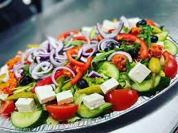
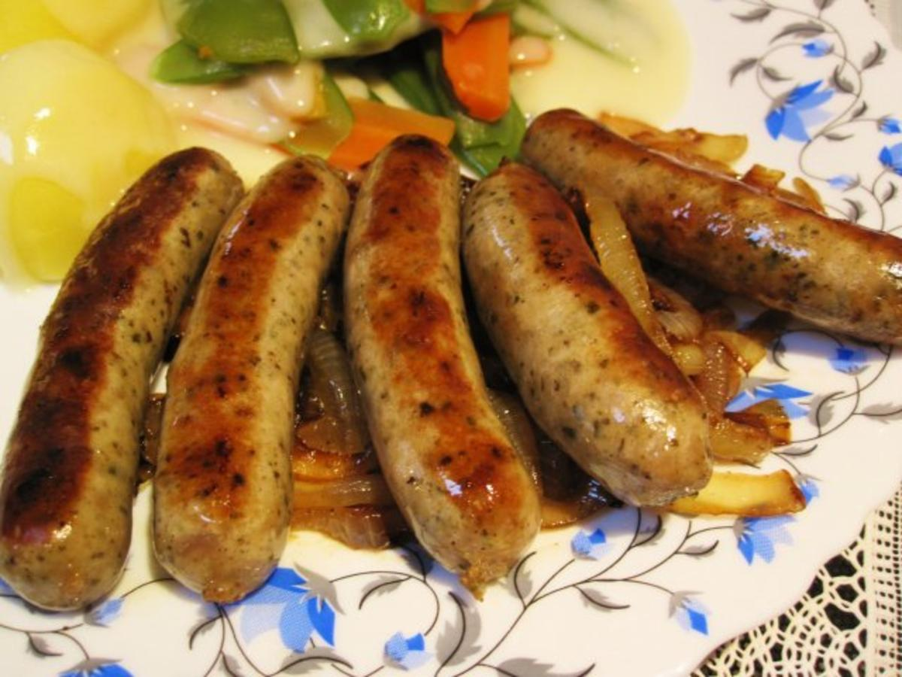
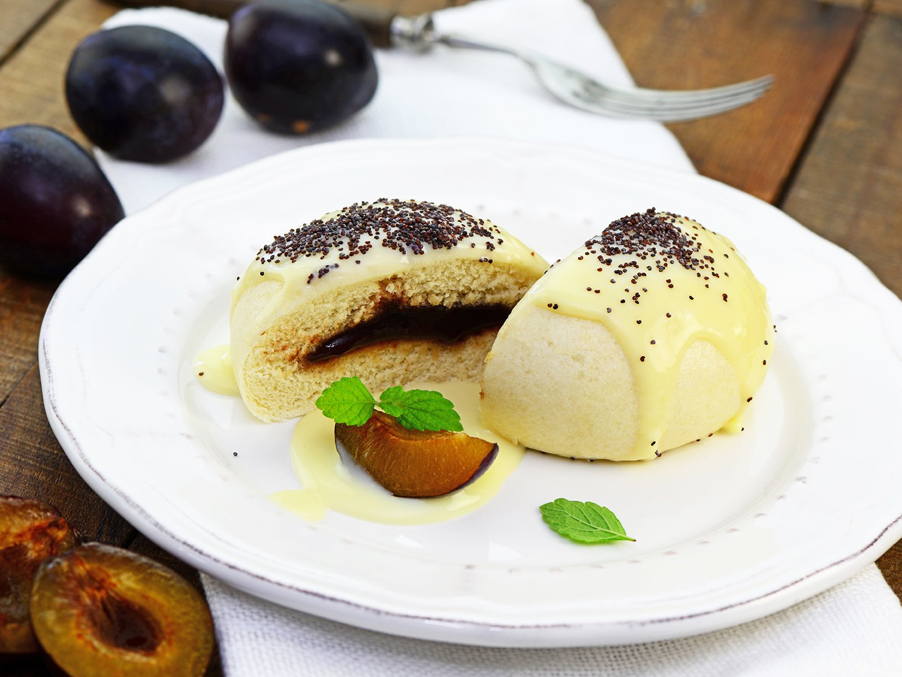
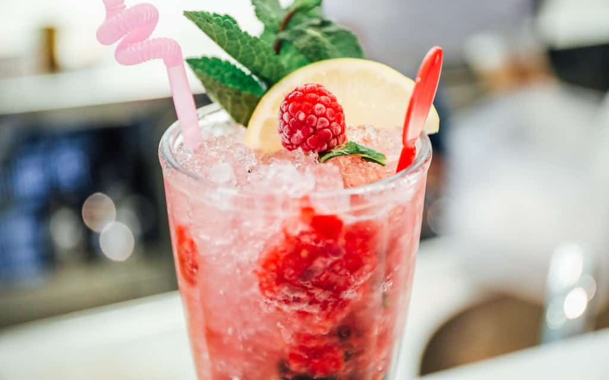
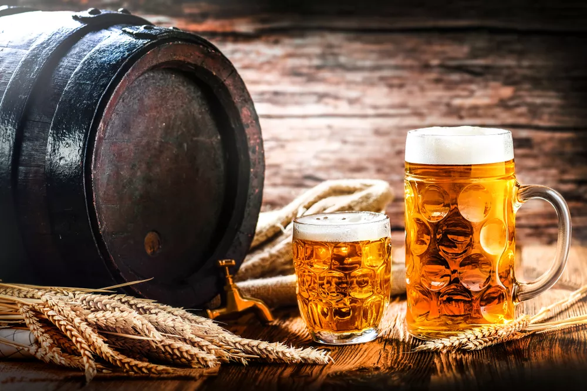

Speisekarte
Salat
🥗 Salat "Olympia"

▶▷ Mit Feta-Käse (G), Oliven, Peperoni, Zwiebeln
Blattsalat, Tomaten und Gurken, mit hausgemachtem Balsamico-Dressing,
dazu warmes Fladenbrot (A1/L)
Salad “Olympia” with sheep-cheese, olives, chillis, leaf salads, onions, tomatoes, cucumbers and warm flat bread
(veggie)
- 12,40€
Vorspeise
🍞 Knoblauchbrot

▶▷ (A1/G) mit frischem Knoblauch
Garlic-bread with fresh garlic
- 4,90€
🥘 Hauptgericht
Bratwurstteller „Barbarossa“

▶▷ Nürnberger Bratwürste, auf
unterschiedliche Art zubereitet (3, 4 o. 5 vom Grill, 3, 4 o. 5 geräucherte und
3, 4 o. 5 als „sauere Zipfel“), mit Weinsauerkraut (A1/C/I/K/G/F), hausgemachtem
Kartoffelsalat (A1/C/I/K/G/F), Zwiebeln, dazu Brot (A1/A2), Meerrettich und Senf (K) (11)
sausage-plate “Barbarossa”, different Nuremberg sausages, 3, 4 or 5 from the grill, 3, 4 or 5 cooked in vinegar, 3,
4 or 5 smoked, with potato-salad, onions, sauerkraut, bread, horseradish and mustard
- 9 Stück für 1 Person - 14,20€
- 12 Stück für 1 oder 2 Personen - 17,90€
- 15 Stück für 2 Personen - 21,90€
Dessert
🥞 Dampfnudel

▶▷ mit Vanillesauce (C/G/A1)
“Dampfnudel” with vanilla-sauce
- 6,50€
🥂☕ Getränke
Alcoholfreie Getränke

- Selters, Mineralwasser, spritzig oder still , Flasche / Water 0,75 L - 14,20€
- Apfelsaftschorle, apple-juice-spritzer 0,4 L - 4,50€
- Cola-Mix, 0,4 L - 4,50€
Biere

- „Grüner“ Vollbier hell, lager beer 0,5 L - 4,90€
- „Sebaldus“ Hefe-Weizen hell wheat beer 0,5 L - 4,90€
- „Tucher“ Weizen alkoholfrei wheat without alkoh. 0,5 L - 4,90€